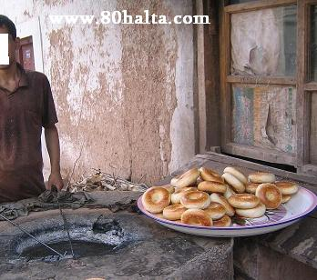

ئالدىنقى يازما
ئالدىنقى يازما كېيىنكى يازما
كېيىنكى يازما
ئاشپەز-ناۋايلاردا نېمە سەۋەبتىن ئاسانلا بۆرەك ئاجىزلاش كىلىپ چىقىدۇ
ئاپتور:Birzat ۋاقتى:2010-07-16



ھۆرمەتلىك بىرزات ھەكىم ياخشىمۇسىز؟ مەن ئۆزەم توغۇرلۇق مەسلىھەت سورىماقچى ئىدىم. مەن ھەركۈنى بەش-ئالتە تونۇ نان ياقىمەن. مەندىن نۇرغۇن تەر چىقىپ كىتىدۇ، مۇشۇنداق بولىۋەرسە سالامەتلىكىمگە زىيانلىكمۇ؟ مىنىڭ تامىقىم بەكلا ئاز ئۇيقۇم كەپلا تۇرىدۇ . بىلىم تىلىپ ئاغرىدۇ .مۇشۇ توغۇرلۇق مەسلىھەت بەرگەن بولسىڭىز. اللا تىنىڭزنى سالامەت، ئىلمىڭىزنى زىيادە قىلغاي . اللاھقا ئامانەت.
جاۋاب:
ئەسسالامۇ ئەلەيكۇم
ئادەتتە ناۋاي، ئاشپەزلەرگە ئوخشاش ئوتقا يېقىن ئىشلەيدىغان كىشىلەرنىڭ تەبئىتى سوغۇققا مايىل بولىدىكەن. بۇنداق بولىشى بەلكىم ئوتنىڭ ھارارىتىگە بەرداشلىق بىرىپ بولالماي سوغۇقلۇقنى كۆپ ئىستىمال قىلغانلىق سەۋەبتىن تەبئىتى سوغۇققا ئۆزگىرىپ قىلىشى مومكىن. يەنە بىر جەھەتتىن كىشى زىيادە ئىسسىقلىق بىلەن ئۇزۇن مۇددەت ئۇچرىشىپ تۇرسا بۆرەك ئىقتىدارى ئاسانلا ئاجىزلاپ سوۋۇپ كېتىشنى كەلتۈرۈپ چىقىردۇ. ئۇستازىمنىڭ ئوتقا بەرگەن تەبىرىدە، ئوتنىڭ تەبئىتى قۇرۇق ئىسسىق لىكىن ئوتقا قانچىكى يېقىنلاشسا نېرىپ - ئەسەبلەردە پالەچلىنىشنى كەلتۈرۈپ چىقىرىپ قاننى ۋە بۆرەكنى سوۋىتىۋېتىدۇ. ئوت بىلەن نۇرمال بولغان ئارىلىقنى ساقلىغاندا ئاندىن ئۇنىڭ قۇرۇق ئىسسىق تەبئىتى ئەينەن بولىدۇ. بۇنىڭ مىسالى: دېڭىز يۈزىدىن شۇنچە ئېگىز بولغان ، قۇياشقا نىسبەتەن يېقىن بولغان چوققىلارنىڭ مۇزلۇقلار بىلەن قاپلىنىپ تۇرۇشى؛
تارىم ئويمانلىقىدەك زېمىننىڭ ئەڭ تۆۋىنىدىكى ، قۇياشقا يېراق بولغان جايلارنىڭ ئىسسىق بولىشىدۇر.
يۇقۇردىكىلەرگە ئاساسەن سىلىنى بۆرەك سوۋۇپ ھەم ئومومىي بەدەننىڭ تۇتۇش قۇۋۋىتى ئاجىزلاپ كەتكەن دەپ ئېيتىشقا بولىدۇ. شۇ سەۋەب بەل تېلىپ ئاغرىش، ئېغىر ئۇيقۇ، ئىشتىھاسىزلىق قاتارلىق ئەھۋاللار كىلىپ چىققان.
بۇنىڭغا قارىتا سىلىگە بىرىدىغان تەكلىپ :
ئىمكان بولسا بىر مەزگىل كەسىپ ئۆزگەرتىپ ياكى ئارام ئىلىپ مىجەز تەڭشەش ئىلىپ بارسىلا!
دورىلاردىن ئاۋۋال مۇنزىج جەۋھىرى ئىچىپ كېسەللىك ماددىسى پىشقاندىن كىيىن ئومومىي بەدەندىكى نۇرمالسىز خىلىتلارنى تازىلاش ئىلىپ بىرلىدۇ. بۇ جەريان بەلكىم 9 كۈندىن 15 كۈنگىچە داۋاملىشىشى مومكىن. ئۇندىن كىيىن بۆرەك خىزمىتىنى ياخشىلايدىغان، ئومومىي بەدەننى قۇۋۋەتلەيدىغان دورىلاردىن :
جاۋارىش زەرئۇنىي
داۋائىل مىشكى
مەجۈنى بەرشىشا كەبىر
ھەببى ئازاراقى قاتارلىق دورىلار ئىستىمال قىلىپ بىرىلىدۇ. بۇ جەريانلار تەجىربىلىك تېۋىپنىڭ كۆرسەتمىسى بويچە ئىلىپ بىرىلسا ئۈنۈمى ياخشى بولىدۇ.
بۇ جەرياندا ئوزۇقلۇقلاردىن سېڭىشلىق ئەمما قۇۋۋەتلىك غىزالىنىش. سەي-كۆكتات، مېۋە-چېۋە، ھەسەل، گۈلقەنت قاتارلىقلار مۇۋاپىق ئىستىمال قىلىنىدۇ.
ئاچچىق-چۈچۈك، زىيادە سوغۇق يېمەك-ئىچمەكلەردىن ساقلىنىش تەۋسىيە قىلىنىدۇ.
يۇقۇردا ئۇستازىمنىڭ كۆز قارىشى بويچە مەزكۇر تورداشنىڭ سۇئالىغا جاۋاب بايان قىلدىم. ئۇنىڭدىكى قۇياشقا يېقىن جايلار راستىنلا سوغۇق بولۇپ يىراق بولغان جايلار ئىسسىق بولامدۇ؟ ياكى مەن خاتا چۈشۈنۈپ قالدىممۇ؟ بۇھەقتە فىزىكا، جۇغراپىيە ساھەسىدىكى تورداشلارنىڭ پىكىرىنى ئاڭلاپ باقاي دېگەن ئىدىم. تەلىمىڭلارنى ئايىمىغايسىلەر؟!! ئۇندىن باشقا تۆمۈرچى، ناۋاي، كاۋاپچىلارنىڭ ئوت ئالدىدا تۇرۇپمۇ نېمە سەۋەبتىن بەدەنى سوۋۇپ كېتىدىغانلىقىنى فىزىكا نۇقتىسىدا تۇرۇپ تەبىر بەرگىلى بولارمۇ؟
مۇھەممەد تۇرسۇن (بىرزات)
بۇ ھەقتە تورداشلارنىڭ قالدۇرغان ئىنكاسلىرى:
ماھىر512:
بۇنىڭدا ئىگىز تاغ چۇقىلىرىغا كۈن نۇرى يانتۇ ھالەتتە چۈشىدۇ لېكىن تۇرپان ئويمانلىقىدەك چوڭقۇر يەرلەرگە بولسا كۈ نۇرى تىك چۈشىدۇ كۈن نۇرىنىڭ تىك چۈشكەندىكى ھارارىتى بىلەن يانتۇ چۈشكەندىكى ھارارىتى ئوخشاش بولمايدۇ شۇڭا يۇقۇرقىدەك ئەىۋال كىلىپ چىقىدۇ..
يەنە ئاتمۇسفىرا بېسىمى بىلەنمۇ مۇناسىۋەتلىك بۇلىشى مۇمكىن ..
يەنى ئاتمۇسفىرا بېسىمى تۈۋەن يەرلەردە سۇنىڭ قايناش تىمپىراتۇرىسى ئاتمۇسفىرا بېسىمى يۇقرى يەردىكىگە قارىغاندا تۈۋەن بولىدۇ..
يۇقرى بېسىملىق قازانلارنىڭ گۆشنى ئادەتتىكى قازانغا قارىغاندا تىز پىشۇرىشىنىڭ سەۋەبى شۇ...
مەكتەپتە شۇنداق ئۈگەنگەندەك يادىمدا بار...
مۇراد:
فىزىكىچى بولمىساممۇ جاۋاب بېرىپ قوياي (ئەمىلىيەتتە بۇ سۇئالنى جۇغراپىيىچىلەردىن سورىسىلا بولاتتى). قۇياش بىلەن يەرنىڭ ئوتتۇرىچە ئارىلىقى 149,600,000 كېلومېتىر. بۇ ئارىلىقنى ئەڭ ئېگىز چوققا جۇمۇلاڭمانىڭ 8848 مېتىر ئېگىزلىكى، ئەڭ تۆۋەن ئويمانلىق تۇرپان ئويمانلىقىنىڭ 500 مېتىر چوڭقۇرلىقى بىلەن سېلىشتۇرغاندا تىلغا ئالغۇسىز بىر پەرق بولىدۇ. جايلار ئارىسىدىكى تېمپراتۇرا پەرقىنى ئاساسلىقى شۇ جايغا قۇياشنىڭ تىك چۈشۈش ۋاقتىنىڭ ئۇزۇن- قىسقىلىقى (كەڭلىك پەرقى) كەلتۈرۈپ چىقىرىدۇ.
بىرزات:
ئەمىسە تۆمۈرچى، ناۋاي، كاۋاپچىلارنىڭ ئوت ئالدىدا تۇرۇپمۇ نېمە سەۋەبتىن بەدەنى سوۋۇپ كېتىدىغانلىقىنى فىزىكشۇناسلاردىن سورىسامغۇ بولار؟
مۇشۇ باھانىدە فىزىكا، جۇغراپىيەگە ئائىت كۆپ بىلىملەرنى بىلىپ قالسام ئەجەپ ئەمەس. بىر تورداش بۇ ھەقتە چوڭلارنىڭ: بېلىقچىنىڭ ئىسسىغى ئېشىپ كىتەر، تۆمۈرچىنىڭ سوغۇقى ئېشىپ كىتەر دەپ ئېيتقانلىقىنى ئاڭلىغان ئىكەن.
قاپلانچاق:
ئىگىز جاينىڭ سوغۇق بولىشى، تۆۋەن جاينىڭ ئىىسق بولىشىنىڭ سەۋەبى ئاساسلىقى قۇياشرادىئاتسىيىسىگە مۇناسىۋەتلىك ئەمەس بەلكى يەردىنقايىتقان رادىئاتسىيەگەمۇناسىۋەتلىك. قۇياش نۇرى يەر يۇزىگە كەلگۇچە قىسقا دولقۇنلىق بولىدۇ ،يەردىن قايىتقاندا بولسا ئۇزۇن دولقۇنلىق بولىدۇ ،شۇڭا ئاۋال يەر يۇزى ئىسسىپ ئۇنىڭدىن كىيىن يۇقىرىغا قاراپ بولىدۇ . شۇڭا يەر يۇزەدەن ئىگىزلىگەنسىرى تىمپىراتۇرا تۆۋەنلەيدۇ . ئادەتتە 100مىتىردا 0.6سىلسىيە گىرادۇس تۆۋەنلەيدۇ . بەزى تەتۇر ئىقىملىق قەۋەتلەردىن باشقا جايلاردا مۇشۇنداق .
ۋاسىت:
قۇياشقا يېقىن جاينىڭ سوغۇق قۇياشقا يىراق جاينىڭ ئىىسق بۇلىدۇ دېگەن گەپ جۇغراپىيە پېنى ساھەسىدە ئىلمىي قاراش ھىسابلانمىسىمۇ ساددا نۇقتىنەزەر بۇيىچە ئېيتقاندا مەلۈم تەرەپلەرردە توغرا دەپ قاراشقا بۇلىدۇ .
ئەمدى تاغنىڭ سوغۇق ئويمانلىقنىڭ ئىسسسق بۇلىشدىكى سەۋەپلەر نىڭ بىرى . ئاتموسفىرا قاتلىمىنى بەش بۆلەككە بۆلىنىدۇ بۇ بەش قەۋەتنىڭ بىرىنجى قەۋىتى ( قايسى قەۋەتلىكى ئېسىمدە يوق سىتراتوسفىرامۇ ،لىتوسفىرامۇ ئىشقىلىپ بىرنىمە فىرا ) بۇ قەۋەتنىڭ ئىگزلىكى ئاشقانسىزى تېمپۇراتۇرا تۆۋەنلەيدىغان خۇسۇسىيىتى بار . نىمشقا تۆۋەنلەيدۇ ؟ سەۋەبى يەرنىڭ ئسسسىق سوغۇق بولۇشى قۇياشتىن كەلگەن ئىىسىقلقنى يەر قۇبۇل قىلىدۇ ھېلقى بىرنىمە فىرا بولسا چاپنىمىزغا ئوخشاش قۇياشتىن كەلگەن ئىسسىقلنى ساقلاپ ئاستا ئاستا تارقىلىدۇ دېمەك . يەر گە بىۋاستە يېقىن جايدا تېمپۇراتورا ئىسسق ، يەردىن يىراقلاشقانسىرى تېمپۇراتۇرا تۆەنلەپ ماڭىدۇ . قالغان تۆت ***فىرالار نىڭ مۇ ئۆزىگە خاس خۇسسۇسىيەتلىرى بولۇپ قېپ قالغان ئاۋۇ تۆت **** فىرا ماۋۇ بىرنىمە فىراغا قارىغاندا ھەددىن زىيادە ئىىسقمىش . تۇلۇق ئوتتۇردىكى جۇغراپىيە بىلىملىرىمگە ئاساسەن ئېسىمدە قالغانلىرىنى دپ قويدۇم . بۇ پەندىن ئايرىلغىلى ھېلىمۇ 7 يىل بوپ قاپتۇ .
سۈزۈك:
ئوتنىڭ ھارارىتى ئىسسىق بولغان بىلەن تەبىئىتى سوغۇق دەپ ئاڭلىغان .
تۇربو:
ئىسىقتا تەر چىققاندىن كېيىن بەدەن سوۋىغان بولۇشى مۇمكىن .
يېڭى يول:
مەنمۇ ئاڭلىغان : كاۋاپچى ،ناۋايلارنىڭ تەبىلا بۆرىكى ئاجىز بولارمىش. چۈنكى ئوتنىڭ تەبىئىتىنى سۇغۇق دەيدۇ. يەنە كىلىپ كۈمۈرنىڭ ئوتى بەك سۇغۇق بولامىش.
بىلىگ:
بۇنى نوقۇل فىزىكا پىنى بىلەن چۈشەندۈرۈش تەس بولىشى مۇمكىن. شۇنداقتىمۇ پەرەز بىلەن دەپ باقاي:
بەدەننىڭ ئىسسىق، سوغۇق بولىشى مىنىڭچە تاشقى مۇھىت بىلەن چىلىشىپ تۇرغان بەدەننىڭ ئىچكى تەڭپۇڭ ھالىتىنى ساقلىغان ۋاقىتتىكى ئەھۋال بولىشى مۇمكىن، مەسىلەن ، بىر دانە كىسەكنى دەيلى ئادەتتىكى تىمپۇراتۇرىدا ئۇنىڭ تىمپۇراتۇرىسىنى ئۆلچەپ باقساق ئەتراپ مۇھىت بىلەن ئوخشاش بولۇپ چىقسىمۇ ناۋادا ئىنچىكە ئۆلچىيەلىسەك ناھايىتى نازۇك تىمپۇراتۇرا پەرقى چىقىشى مۇمكىن. مانا بۇ ئۇنىڭ تەڭپۇڭ تۇرغاندىكى خاس تىمپۇراتۇرىسى ، ئۆرۈپ ئېيتقاندا ئۇنىڭ ئىسسىق ياكى سوغۇقلىقى بولىشى مۇمكىن...
ئادەم بەدىننىمۇ سىرىتقى مۇھىت بىلەن چىلىشىپ تۇرغان بىر مۇرەككەپ سىسىتىما دەپ قاراشقا بولىدۇ. ئۇنىڭ ھەرقايسى ئورۇنلىرىنىڭ خاس تىمپۇراتۇرىسى پەرىقلىق بولسىمۇ ، تەقرىبى ئومۇمى بەدەن تىمپۇراتۇرىسىنى بىر خاس قىممەتنى ئالغان دەپ چۈشىنىشكە بولىدۇ. ئادەم بەدىننىڭ ئىسسىق ،سوغۇق بولىشى(فىزىكىلىق جەھەتتىن) مانا مۇشۇنىڭغا مۇناسىۋەتلىك بولىشى 7ئىھتىمال...
ئەمدى ئاساسى سۇئال، ئادەم ئۇزۇن ئوتقا يىقىن تۇرسىمۇ نىمە ئۈچۈن بەدىنى سوۋۇپ كىتىدۇ؟ دىگەن مەسىلىگە كەلسەك: مىنىڭچە سىرىتقى مۇھىتنىڭ تۇراقسىز تەسىر قىلىشى ئۇنىڭ بەدىنىڭ خاس تىمپۇراتۇرىسىنى ئۆزگەرتىۋەتكەن بولىشى مۇمكىن. مەسىلەن، خالىغان بىر سىستىما بار دەيلى، ئۇ ئەتراپتىكى ھەرقانداق مۇھىتقا قويۇلغاندا ئۆزىنىڭ تىمپۇراتۇسىسىنى ئەتىراپ مۇھىت بىلەن يىقىنلاشتۇرۇش يۈزلىنىشىدە بولىدۇ، ئىسسىق جايغا قويۇلسا ئىسسىقلىقنى سىرىتتىن ئۈزلۈكسىز قوبۇل قىلىدۇ، سوغۇق جايغا قويۇلسا ئۈزلۈكسىز ئىسسىقلىق تارقىتىدۇ، شۇنداق قىلىپ ئۇنىڭ ئۆزىنىڭ خاس تىمپۇراتۇرىسى ئەتىراپ مۇھىتقا ناھايىتى يىقىن بىر قىممەتتە توختايدۇ، ئەتىراپ مۇھىت ناھايىتى چوڭ بولسا ، قىسمەن دائىرىدىكىسى بىلەن ئوخشاش تىمپۇراتۇرىدا ئۆزگىرىش ھاسىل قىلىپ تۇرىدۇ.
بىز دەۋاتقان سىستىما ئەگەر تىمپۇراتۇرا پەرقى ناھايىتى يۇقىرى بولغان ئىككى مۇھىتقا دەۋرىي قويۇلسا ئۇنىڭ ئۆزىنىڭ تىمپۇراتۇرىسى بۇ ئىككى چەك قىممەتتە (چوڭ ئامپىلتوتىلىق) " تەۋرىنىش" -- ئۆزگۈرۈش ھاسىل قىلىپ تۇرىدۇ. ئىىسققا بىر مەزگىل قويۇلۇپ ئاندىن بىراق نىسبەتەن سوغۇققا قويۇلسا ئاۋال تىمپۇراتۇرىسى نۇرغۇن ئىسسىقلىقنى سۈمۈرۈپ، يۇقىرىلايدۇ ئاندىن زور ئىسسىقلىقنى تىزلا قويۇپ بىرىدۇ، شۇنىڭ نەتىنجىسىدە ئۆزنىڭ تىمپۇراتۇرىسى تىز ھالدا تۆۋەنلەپ كىتىدۇ، پەرىزىمچە، ئۆزى باشتا قوبۇل قىلغان ئىسسىقلىق بىلەن قوشۇپ، يەنە ئازغىنە ئىسسىقىنىمۇ سىرىتقا رادىياتسىيەلەپ تارقىتىۋاتىدۇ شۇنىڭ بىلەن ئۇنىڭ تەبىيتى ئۆزگۈرۈپ ، ئەسلىدىكى مۇقىم سىستىمىغا قويۇلغاندىكىدىن تۆۋەنلەپ كەتسە كىرەك.
ناۋاينىڭ بەدىننى يۇقارقىغا سىلىشتۇرۇشقا بولىدۇ. يۇقارقىلار پۈتۈنلەي پەرەز، پەقەت فىزىكىلىق نوختىدىن چىقىپ ئاز-تولا خىيالىمنى بايان قىلىپ باقتىم. ئەمەلىيەتتە ئەدەم بەدىنى مۇرەككەپ بىر سىستىما ، بۇ ئەھۋالنى چۈشەندۈرۈش يەنە نۇرغۇن پەنلەرگە چېتىلىشى مۇمكىن...
زىيالى:
ھەكىم، سوغۇق تەرلەشنىڭ سەۋەبىدىن ئويلىشىپ باقسىلا بەلكىم بۇ سۇئالنىڭ جاۋابىغا ئېرىشىپ قالىدىلا.
مىنىڭ پەرىزىم:
نان ياققان ۋاقىتتىكى تۇنۇر بېشىدىكى تىمپىراتورا(70-80 گىرادوس دىسەم بەك ئېشىپ كىتەرما؟) بىلەن ئادەتتىكى ۋاقىتتىكى(20 -30 گىرادوس ئەتراپىدا) تىمپىراتورا پەرقىنىڭ بەك يۇقىرى(40-50 گىرادوس پەرىق قىلىدۇ دىسەم ئېشىپ كەتمەس ھە) بولىشى،يۇقىرى تىمپىراتورىدا قان تۇمۇرلارنىڭ ئىسسىقتىن كىڭىيىپ،تۇيۇقسىز قىسقا مۇددەت ئىچىدە ئادەتتىكى تىمپىراتورىغا قايىتقاندا بولسا قان تۇمۇرلارنىڭ تارىيىشى بىلەن قان ئايلىنىشنىڭ راۋان بولماسلىقى دىگەندەك مەسلىلەر كەپ چىقىش مومكىن.تىز سۈرئەتتە ئايلىنۋاتقان قاننىڭ تۇمۇرلارنىڭ تارىيشى بىلەن ئايلىنالماي يۈرەككە قايتىشى ئاۋال يۈرەكنىڭ بېسىمىنى ئاشۇرۋەتسە كېرەك.بۇ خىل بېسىم بەلكىم يۈرەك ئۈچۈن پايدىسىز.
قان تۇمۇردىن باشقا يەنە كىڭەيگەن تەر تۈشۈكچىلىرىمۇ ئوخشاشلا تارىيىش بىلەن،ئىسىققتا تىمپىراتورا ساقلاش ئۈچۈن بەدەن ھۈجەيرىسىدىن ئايرىلىپ چىققان تەر سۇيۇقلىقى ئۈچۈن،تەر تۈشۈكچىلىرى تۇيۇقسىز تارايغىنىدا بەدەن بىلەن سىرىتقى مۇھىت ئوتتۇرسىدا قەپ قالغان بولىشى مومكىن.بۇ خىل تەر يىغىلىپ بىر يەرگە كەلگىنىدە تۇيۇقسىز بىر باھانىلەر بىلەن(قاتتىق چۈچۈش،جىددىيلىشىش قاتالىق) چىقىپ كىتىشى مومكىن.چىقىپ كەتسە ياخشى.ئەمما چىقىپ كىتەلمىگىنىدە ئادەم بەدىنىگە زىيانلىق بولىشى مومكىن.سوغۇق تەر ئادەم بەدىنىگە زىيانلىق ياكى بۆرەك كىسەللىكىنىڭ باشلىنىشى دەپ دەپ قويىدىكەن چوڭلار.
ئۈزەممۇ ئالىي مەكتەپتە ئوقىۋاتقىنىمدا سوغۇق سۇدا يۇيۇنۇپ يۈرۈپ شۇنداق كىسەل تېپىۋلغان ئىدىم.كىيىن بىر ئاغنىمىزنىڭ تەكلىپى بىلەن سوغۇق سۇدا يۇيۇنۇشنى تاشلىدىم،بۇ خىل ئالامەتمۇ يوقايدى.ھازىرمۇ ئېزىپ تېزىپ سۇغۇق سۇغا مۇنچىغا چۈشۈپ سالمايمەن.
نىياز دانىش:
خىمىيە نۇقتىسىدىنمۇ پىكىر قاتناشتۇرۇپ باقاي . ئوت كۆيگەندە ھاسىل بولىدىغان ئاساسلىق تەركىپ كاربون( 4- )ئوكسىد ، يەنە ئاز مىقداردا گۈڭگۈرت( 4- )ئوكسىد ، ئۇنىڭدىن باشقا چالا كۆيۈشتىن ھاسىل بولغان كاربون ( 2-) ئوكسىد . بۇلارنىڭ ھېچقايسىسى بەدەنگە پايدىلىق ئەمەس بولۇپمۇ كاربون (2-) ئوكسىد قاننىڭ ئوكىسىگېن ئېلىپ يۈرۈش ئىقتىدارىنى ئاجىزلاشتۇرۇپ بەدەننىڭ ئوكسىگېن قوبۇل قىلىشىنى توسالغۇغا ئۇچرىتىدۇ . بەدەنگە ئوكسىگېن يېتىشمىگەندىكىن چوقۇم كېسەللىك ئالامەتلىرى كۆرىلىدىغان گەپ .
ئوت سوغاق دېگەننى يۇقۇرىقىدەك ئىزاھلىسا بولامىكىن دەپ ئويلىدىم .
كەۋسەر 89:
بۇنى تىبابەت نۇقتىسىدىن چۈشەندۈرسىمۇ بولىدۇ دەيمەن.
مەن ئۇيغۇرچىدە ئوقۇمۇغان،شۇڭا بەك چۈشۈنۈشلۈك سۆزلىيەلمەسلگىم مۇمكىن.يۇقىرى مەن تۆۋەندىكىدەك چۈشەندىم:
1،يۇقىرى تېمپىراتۇرىغا ئۇچراشساق ،بەدەندىكى قىل -قان تومۇرلار(毛细血管)ئېچىلىدۇ.بەدەندىكى ئىسسىقلىق سىرىتقا تارقايدۇ،بەدەن سوۋۇيدۇ.(شۇڭلاشقا بەدەن سوغۇققا مايىل بولۇپ قالىدۇ.)ئېسسىقلىق تەر ئارقىلىق چىقىرىلىدۇ،تەرنىڭ كۆپلەپ چىقىشى قاننى قويۇقلاشتىرىۋېتىدۇ،يۇرەك قان تومۇرلارنىڭ بېسىمى ئېغىرلىشىدۇ.
2.بۆرەككە زىيانلىق،بەدەندىكى نۇرغۇن سۇيۇقلۇق تەر ئارقىلىق چىقىپ كەتتى.بۆرەكتىن چىقىدىغان سۇيۇقلۇق ئازلايدۇ،سۈدۈك قۇيۇلىدۇ،بۆرەكنىڭ بېسىمى كۆپىيدۇ.شۇڭا ناۋايلىرىمىزنىڭ بۆرەك كىسىلى كۆپ.ئادەم قانچە تەرلىگەنسېرى بۆرەككىمۇ شۇنچە زىيىنى بولىدۇ.مەسىلەن،ئورۇقلىتىش دورىلىرى،كۆپىنچىسى تەر چىقىرىشنى ئاساس قىلغان،تەرلىگەندىن كېيىن ئەلۋەتتە بەدەن ئېغىرلىغى چۈشىدۇ،بىراق بۆرەك ئورۇپلاپ كېتىدىكەن.مىنىڭ بىر دوستۇم شۇنداق بولغان،
3.ئاشقازانغا زىيىنى.يۇقۇرى ھارارەت شۆلگەي بەزلىرىنى تىزگىنلەپ،ئاشقازان كىسلاتاسى ئازلايدۇ.ئۈچەينىڭ خىزمىتى ئاستىلايدۇ.ھەزىم قىلىش سىستىمىسى ناچارلىشىدۇ.
بۈگۈن مۇشۇنچىلىك بىلەرمەنلىك قىلاي،
كەۋسەر89:
ئۇيغۇر تىبابىتىدە مەلۇم بىر جىسىمنىڭ ئىسسىق -سوغاق تەبىيىتىنى بىر پۈتۈن گەۋدە دەپ قاراشقا بولامدۇ؟مەسىلەن،ئىسسىقلىقى ئېشىپ كەتسە سوغاقلىقى ئازلاپ كېتەمدۇ؟ئەگەر شۇنداق بولسا ،ھاۋانىڭ تەبىيىتى ھۆل ئىسسىق ئىكەن(ئۇيغۇر تىبابەت قامۇسى،بىرىنچى توم،4-بەت)،توۋەن يەرلەردە ھاۋا زىچ بولىدۇ،شۇڭا ھاۋانىڭ ئىسسىقلىق دەرىجىسى يۇقىرى بولامدۇ؟ئىگىز يەرلەردە ھاۋا شالاڭ بولغاچقا ئىسسىقلىق دەرىجىسى توۋەن بولۇپ ،سوغاقلىق دەرىجىسى ئارتىپ كېتەرمۇ؟
ئوت كۇيگەندە ئاز مىقداردا سۇ ھاسىل بولىدۇ.ئادەتتىكى كۆمۇردە سۇ%0.1.دىن %30 گىچە بولىدۇ،بۇلار كۆيۈش جەريانىدا پارچىلىنىپ بولىدۇ،ياكى پارغا ئايلىنىپ ئۇچىدۇ،ھاۋادىكى ھىدروگىنمۇ (氢气
（پارغا ئايلىنىدۇ،بۇ پارلار ئوت بىلەن ھاۋا ئۇچرىشىش يۈزىدە ئەڭ كۆپ بولىدۇ دەپ ئويلايمەن .مەسىلەن تونۇر ئەتراپىدا،شۇڭا ناۋايلارنى سوغۇق قاپلاپ كىتىشى مۇمكىن .بۇ تەجرىبە ناھايىتى ئاسان،شامنى يېقىپ بىر ئىستاكاننى ئوتنىڭ ئۈستىگە تۇتساق ،ئىستاكاندا سۇ تامچىلىرى پەيدا بولىدۇ.
ناۋايلىرىمىز ،ئاشپەزلىرىمىز ھەر كۈنى ئاستا خاراكتىرلىق زەھەرلىنىش بار.مەسىلەن ،ئوت يالقۇندىن چىققان زەھەرلىك گازلار :一氧化碳、氰化氢、二氧化碳、丙烯醛、氯化氢、二氧化硫،ئوت ئاپىتىدە نۇرغۇن ئادەم كۆيۈپ ئۆلمەي بەلكى زەھەرلىنىپ ئۆلگەن.زەھەرلىك گاز ھەر كۈنى ئاز-ئازدىن بەدەنگە كىرسە ،بۆرەك ،جىگەر،ئۆپكە ئەلۋەتتە ئىشتىن چىقىدۇ.
فىزىكا ئالىملىرىنىلا تەكلىپ قىلىپ نىمىشقا خېمىيە ئالىملىرىنى تەكلىپ قىلمايسىلەر،بىز سەل باتناپ قالدۇق.

 يازما مەنبەسى: بېكەت ئەسىرى
يازما مەنبەسى: بېكەت ئەسىرى خەتكۈش: بۆرەك ئاجىزلاش ئاشپەز ناۋاي
خەتكۈش: بۆرەك ئاجىزلاش ئاشپەز ناۋاي  مۇناسىۋەتلىك يازمىلار:
مۇناسىۋەتلىك يازمىلار:
ئىنكاس: 12 | نەقىل: 0 | كۆرۈلگىنى: -
 قايتۇرما
قايتۇرما
[man seli den surap pak sam ,seli ov gan qi mu ،yaki teba bat ta ov kehan mukai se elm da ov kehan,kai se te jarat belan xu hun le nela،ka yar da ov ke han,eilan kel dur han makal liri bamu ,kai si te mi da.kai se tevep hekem neg xa ger ti, dukan ler neg tuluk nami ni ma?ovi hur teba betini kan qelk quxunila.dapsezlek bul semu
ئاتموساېرا قەۋىتىنى جەئى بەش قەۋەتكە بۆلىمىز ئۇلار يەر يۈزىدىن رېتى بويىچە 1_ تىرافوسفىرا . 2_ سىتىرافوسفىرا . 3- مىزوسفىرا .4_ ئىكىزوسفىرا . 5- ئىئونوسفىرا . دىگەنلەردىن ئىبارەت . بۇ بەش قەۋەتنىڭ چېگرىسى يەر يۈزىدىن ئوخشاش بولمىغان ئىگىزلىكلەر بويىچە ئايرىلىپ تاكى ئاتموسفىرا قەۋتىنىڭ ئەڭ سىرىتقى چېگرىسىغىچە داۋاملىشىدۇ . ئەلۋەتتە بۇ بۆلەكلەرنىڭ فىزىكىلىق خۇسۇسىيەتلىرى بىر - بىرىگە ئوىشىمايدۇ . بۇنىڭ ئىچىدە يەر يزىگەئەڭيىقىن بولغان 1- جەۋەتنى مىسالغف ئالساق ، قەۋەتنىڭ ئالاھىدىلىكى يەر يۈزىدىن ئىگىزلىگەنسېرى ئاتموساىرا بىسىمى شۇنچە تۆۋەنلەيدۇ ھەم تېمپىراتورىمۇ ئىگىزلىكنىڭ ئىشىپ بىرىشىغا ئەگىشىپ شۇنچە تۆۋەنلەيدۇ بۇ ھال 2- قەۋەت يەنى سىتىرافوسفىرا قەۋىتىگىچە داۋاملىشىدۇ . شۇڭا ئىگىز تاغنىڭ تېمپىراتورسى تۈزلەڭ ياكى ئويمان جايغا قارىغاندا توۋەن بولىدۇ . ئوخشاش كەڭلىك رايونلىرىدا قۇياش نۇرۇنىڭ چۈشىش بۇلىڭلىرى تامامەن ئوخشاش بولىدۇ . قۇياش نۇرى پەقەت ئوخشاش بولمىغان كەڭلىك رايونلىرىدىلا ئوخشاش بولمىغان يانتۇلىقتىلا چۈشىدۇ (نۇرى ) .
چۈنكى ئوتنىڭ تەبىئىتى سوغ..
ناۋايلارنىڭ بۆرىكى ئاجىزلاپ كىتىدۇ دىگەنگە مەن ئىشەنمەيمەن.. لىكىن ئاشپەزلەرنىڭ شۇنداق بۇلىشى مۇمكىن .. مەنمۇ 5 يىل ناۋايلىق قىلغان ئاۋاي ئىدىم ئىلگىرى.. ئا شۇ ۋاقىتلاردا ئۇستاملارنىڭ (چوڭ ئۇستام ئامەس مەندىن بۇرۇن كەلگەن ئۇستاملار)قىزلار ناۋايغا ياتلىق بولسا ھەقىقى ھاياتنىڭ پەيزىنى سۇرەلەيدۇ.. دىگىنىنى ئاڭلىغان ئىدىم .. كىيىنچە مەنمۇ چوڭ بۇلۇپ بالاغەتكە يەتتىم .. شۇ چاغلاردا مەنمۇ شۇ ئۇستاملارنىڭ دىگنى راسمىدۇ دەپ ئۇيلاپ قالغان ئىدىم دىگەندەك 5 يىل جەريانىدا.. مىنىڭ ھېلىقى نەرسەم 24 سائەتنىڭ ئىچىدە 10 سائەتتن ئارتۇق تىكلا تۇراتتى .. ھەپتىدە ئىككى ئۇچ قېتىم بەزىدە تۆت بەش قېتىم دىگەندەك ئىھتىلام (شەيتان ئاتلاش) بۇلۇپ قالاتتىم .. بەش يىل ناۋايلىقنى ئۇگۇ نۇپ دۇكان ئايرىپ چىققاندىن كىيىن بۇ كەسىپتىن ناھايىتى زىرىكىپ كەتكىنىمنى ھىس قىلدىم.. شۇنىڭ بىلەن بۇ كەسىپتىن چىكنىپ شوپۇر بۇلۇپ ماشىنا ھەيدەش خىيالىغا كىلىپ شوپۇرلۇق مەكتەپتە ئۇقۇدۇم .. بۇ مەكتەپتە ئۇقۇش جەيانىدا بەزىدە ئاچ بەزىدە توق دىگەندەك يۇرۇپ ئۇچ ئايغا بارمايلا...
بۇ توقماقنىڭ ھالى ئاستا ئاستا بۇشاشقا باشلىدى... بۇرۇنقى 10 سائەتتىن ئارتۇق تىك تۇرۇش بىر سائەتكە..
ھېلقى ئىھتىلام بۇلۇشمۇ ھەپتىدە بىر قېتىمغا چۇشۇپ قالدى.. شۇنىڭ بىلەن مەن ئۇستاملارنىڭ دىگىنىڭ ھەقىقەت ئىكەنلىكگە ئىشەندىم..
ئاخىردا بورىكى ئاجىز ناۋاي سەپدىېشىما دەيدىغنىم ... سوغاق سۇ ئىچمەڭ يېنىڭىزدا ئوت تەييار بولغاندىكىن چاي قاينىتىپ شۇنىڭغا تاللا بازارلىردا ۋە ياكى ئۇيغۇر تىبابەت دۇرا دۇكانلىردا ساتىدىغان ئىسسسقلىق چايلاردىن دەملەپ ئىچىڭ... يەنە كۇندۇزى ئىسسىقتا ئادەمنىڭ تاماق يىگۇسى كەلمەيدىغانلىقى ئېنىق بۇنىڭ ئامالى ئەتتىگەندە ئىشقا چۇشۇشتىن بۇرۇن چۇقۇم 5 مۇلۇق گىردە ناندىن ئىككىنى ياكى ئۇچنى يەۋتىپ ئاندىن ئىشقا چۇشۇڭ.. چۇشكىچە قىززىق ناندىن بىرنى قۇرۇق ياكى سوغاق سۇغا چىلاپ يەڭ.. چۇشتە تاماق يەمسىز ياكى يىمەمسىز ئىتىيارىڭىز ئامال بار ئازراق بولسىمۇ يەپ قويسىڭىز تېخىمۇ ياخشى.. بولمىسا كەچتە كۇن كىرىگەندىن كىيىن ھاۋا ئازراق سۇۋۇيدۇ.. بۇچاغدا يەنە بىر نەرسە يەپ ئۇخلاپ قالسىڭىز بۇلىدۇ... ئەتتىگەندە تاماق يىيىشكە بىر نەچچە كۇن كۇنەلمەسلىكڭىز مۇمكىن لىكىن نەچچە كۇندىن كىيىن كۇنۇپ قالسىز...
ئەينى ۋاقىتتتا مەن كۇندە توققۇز- ئون تۇنۇر نان ياقاتتىم..
بولمىسا سىزمۇ ماڭا ئوخشاش كۇندە ئون تۇنۇر نان يېقىپ بېقىڭ ساقيىپ قالامسىز تېىخى (چاخچاق)
(چاخچاق)
ئاخردا تىنىڭىزنىڭ بالدۇرراق ئەسلىگە كىلىشىگە تىلەكداشمەن...
بۇ توقماقنىڭ ھالى ئاستا ئاستا بۇشاشقا باشلىدى... بۇرۇنقى 10 سائەتتىن ئارتۇق تىك تۇرۇش بىر سائەتكە..
ھېلقى ئىھتىلام بۇلۇشمۇ ھەپتىدە بىر قېتىمغا چۇشۇپ قالدى.. شۇنىڭ بىلەن مەن ئۇستاملارنىڭ دىگىنىڭ ھەقىقەت ئىكەنلىكگە ئىشەندىم..
ئاخىردا بورىكى ئاجىز ناۋاي سەپدىېشىما دەيدىغنىم ... سوغاق سۇ ئىچمەڭ يېنىڭىزدا ئوت تەييار بولغاندىكىن چاي قاينىتىپ شۇنىڭغا تاللا بازارلىردا ۋە ياكى ئۇيغۇر تىبابەت دۇرا دۇكانلىردا ساتىدىغان ئىسسسقلىق چايلاردىن دەملەپ ئىچىڭ... يەنە كۇندۇزى ئىسسىقتا ئادەمنىڭ تاماق يىگۇسى كەلمەيدىغانلىقى ئېنىق بۇنىڭ ئامالى ئەتتىگەندە ئىشقا چۇشۇشتىن بۇرۇن چۇقۇم 5 مۇلۇق گىردە ناندىن ئىككىنى ياكى ئۇچنى يەۋتىپ ئاندىن ئىشقا چۇشۇڭ.. چۇشكىچە قىززىق ناندىن بىرنى قۇرۇق ياكى سوغاق سۇغا چىلاپ يەڭ.. چۇشتە تاماق يەمسىز ياكى يىمەمسىز ئىتىيارىڭىز ئامال بار ئازراق بولسىمۇ يەپ قويسىڭىز تېخىمۇ ياخشى.. بولمىسا كەچتە كۇن كىرىگەندىن كىيىن ھاۋا ئازراق سۇۋۇيدۇ.. بۇچاغدا يەنە بىر نەرسە يەپ ئۇخلاپ قالسىڭىز بۇلىدۇ... ئەتتىگەندە تاماق يىيىشكە بىر نەچچە كۇن كۇنەلمەسلىكڭىز مۇمكىن لىكىن نەچچە كۇندىن كىيىن كۇنۇپ قالسىز...
ئەينى ۋاقىتتتا مەن كۇندە توققۇز- ئون تۇنۇر نان ياقاتتىم..
بولمىسا سىزمۇ ماڭا ئوخشاش كۇندە ئون تۇنۇر نان يېقىپ بېقىڭ ساقيىپ قالامسىز تېىخى
(چاخچاق)ئاخردا تىنىڭىزنىڭ بالدۇرراق ئەسلىگە كىلىشىگە تىلەكداشمەن...
ناۋاي،ئاشپەز ئۇستاملارنىڭ كۆپ تەرلىشى توغرىسىدا توختىلايلى، بۇنىڭدا مەن ئۇستاملارنىڭ يۇقۇرى تىمپىراتۇرا شارائىتىدا ئۇزاق ئىشلەش سەۋەبىدىن ۋە جىسمانىي ئەمگەكنىڭ كۆپلىكىدىن دەپ قاراشقا بۇلۇدۇ، ئادەم ئورگانىزىمى تەر ئارقىلىق بەدەندىكى ئىسسىقلىنى تارقىتىپ بەدەن تىمپىراتۇرسىنى تەڭشەپ تۇرۇدۇ، شۇ جەيراندا ناتىرىي،كالىي،قاتارلىق ئىلمىتىلارنىمۇ تەر ئارقىلىق چىقىرىپ تۇرۇدۇ،ئادەم قانچە كۆپ تەرلىسە بەدەندىكى ئىسسىقلىقنى شۇنچە كۆپ تارقىتىۋىتىدۇ،ناتىرىي،كالىي،قاتارلىق ئىلمىتىلارنىمۇشۇنچە كۆپ چىقىپ كىتىدۇ .ناتىرىي،كالىي،قاتارلىق ئىلمىتىلار كۆپ يوقۇتۇلسا ئادەم بەدىنى ئاجىزلايدۇ،ھالسىزلىنىدۇ،ماغدۇرسىزلىنىدۇ،قان بېسىمى تۆۋەنلەپ كىتىدۇ،يۆرەكنىڭ سوقۇش قېتىم سانىمۇ تۆۋەنلەيدۇ.
مۇشۇنداق بۇلۇرۋەرسە سالامەتلىككە زىيانلىق شۇنىڭ ئۇچۇن ھەسەل سۇيىگە ئازىراق تۇز تىمىتىپ ئىستىمال قلىپ بىرىشىڭىزنى سورايمەن.
بېلىڭىزنىڭ تېلىپ ئاغرىشنىڭ سەۋەبىمۇ يۇقۇرقىدەك بۇلۇپ يەنە سىزنىڭ بەلنى ئېگىپ رۇسلاش ھەركىتىنىڭ كۆپلىكىدىن بەل مۇسكۇلى چارچاپ كەتتى دىيشكىمۇ بۇلدۇ،سىز بەش-ئالتە تۇنۇر نان يېقىپ بولغىچە بەلنى ئېگىپ رۇسلاش ھەركىتىدىن ئازدىگەندىمۇ (بىر تۇنۇ ناننى 50دىسەك)300دىن350قېتىمغىچە قىلىسىز،كۇندە شۇنداق قىلىۋەرسىڭىز بەلنىڭ تۇغۇر يوللۇق مۇسكىلىدا زىيادە ھەركەت سەۋەپلىك چارچاش پەيدا بۇلۇدۇ.
ئەمدى بۇيەردە ئوتنى سۇغۇق دىگەن ئاغىينىلەرگە كەلسەك بىزنىڭ ئاتاقلىق ئالىم،تىبابەتشۇناسىلىرىمىز(ئەبۇئەلىيئىبىنسىا،فارابىي،غازىباي قاتارلىق نۇرغۇن جۇما)ئوت: تەبىئەت ۋە كەيپىيات جەھەتتىن قۇرۇق ئىسسىق، دەپ كەلگەن ئۇنىڭ تەبىيتى ۋە كەيپىياتى ئىنىقلا ئسىسىق .
ئەمدى ئىسىسقتا تۇرغان ئادەمنىڭ بەدىنىنى سۇغۇقلۇق قاپلاپ كىتىشنىڭ سەۋەبى يۇقۇرقىدەك مەن چۇشەندۇرۇگەندەك سەۋەپلەردىن بۇلۇدۇ،يەنە بىرسى ئىسىسق، يۇقۇرى تىمپىراتۇرا شارائىتىدائادەم سۇ ۋە سۇغۇق ئىچىملىككە بولغان تەلىپى يۇقۇرلايدۇ،بۇ سۇ ۋە سۇغۇق ئىچىملىكلەرنى كۆپ ئىستىمال قىلىۋىرىش ئاخىردا ئادەم بەدىنىنىڭ سۇغۇق مىزاجغا ئۆزگۇرۇپ قېلىشىنى پەيدا قىلىدۇ.
مۇشۇنداق بۇلۇرۋەرسە سالامەتلىككە زىيانلىق شۇنىڭ ئۇچۇن ھەسەل سۇيىگە ئازىراق تۇز تىمىتىپ ئىستىمال قلىپ بىرىشىڭىزنى سورايمەن.
بېلىڭىزنىڭ تېلىپ ئاغرىشنىڭ سەۋەبىمۇ يۇقۇرقىدەك بۇلۇپ يەنە سىزنىڭ بەلنى ئېگىپ رۇسلاش ھەركىتىنىڭ كۆپلىكىدىن بەل مۇسكۇلى چارچاپ كەتتى دىيشكىمۇ بۇلدۇ،سىز بەش-ئالتە تۇنۇر نان يېقىپ بولغىچە بەلنى ئېگىپ رۇسلاش ھەركىتىدىن ئازدىگەندىمۇ (بىر تۇنۇ ناننى 50دىسەك)300دىن350قېتىمغىچە قىلىسىز،كۇندە شۇنداق قىلىۋەرسىڭىز بەلنىڭ تۇغۇر يوللۇق مۇسكىلىدا زىيادە ھەركەت سەۋەپلىك چارچاش پەيدا بۇلۇدۇ.
ئەمدى بۇيەردە ئوتنى سۇغۇق دىگەن ئاغىينىلەرگە كەلسەك بىزنىڭ ئاتاقلىق ئالىم،تىبابەتشۇناسىلىرىمىز(ئەبۇئەلىيئىبىنسىا،فارابىي،غازىباي قاتارلىق نۇرغۇن جۇما)ئوت: تەبىئەت ۋە كەيپىيات جەھەتتىن قۇرۇق ئىسسىق، دەپ كەلگەن ئۇنىڭ تەبىيتى ۋە كەيپىياتى ئىنىقلا ئسىسىق .
ئەمدى ئىسىسقتا تۇرغان ئادەمنىڭ بەدىنىنى سۇغۇقلۇق قاپلاپ كىتىشنىڭ سەۋەبى يۇقۇرقىدەك مەن چۇشەندۇرۇگەندەك سەۋەپلەردىن بۇلۇدۇ،يەنە بىرسى ئىسىسق، يۇقۇرى تىمپىراتۇرا شارائىتىدائادەم سۇ ۋە سۇغۇق ئىچىملىككە بولغان تەلىپى يۇقۇرلايدۇ،بۇ سۇ ۋە سۇغۇق ئىچىملىكلەرنى كۆپ ئىستىمال قىلىۋىرىش ئاخىردا ئادەم بەدىنىنىڭ سۇغۇق مىزاجغا ئۆزگۇرۇپ قېلىشىنى پەيدا قىلىدۇ.
ياخشىمۇسىز بىرزات ئەپەندىم. مەن ئەسلى ئايرىم سۇئال سورىماقچى ئىدىم، لېكىن ئۇ يەرنى تاپالماي بۇ يەردە سوراشقا مەجبۇر بولدۇم. مەن ھازىر بەك ئېغىر ئۇخلايدىغان بولۇپ قالدىم، كەچلىرى بەك بالدۇر ئۇيقۇم كېلىدۇ، ئەتىگەنلىرىمۇ پەقەت بالدۇر قوپالمايمەن، سائەتنىڭ ئاۋازىنىمۇ ئاڭلىمايمەن. سوغۇقۇم ئېشىپ كەتكەن ئوخشايدۇ دىسەم كىچىك تەرىتىم سامان رەڭگىدە سېرىق كېلىدۇ. بۇ مەسىلە توغرىسىدا بىر مەسلىھەت بەرسىڭىز بوپتىكەن. رەھمەت سىزگە.
ئۇيغۇر تىبابىتىدە مىزاجغا ئالاھىدە ئەھمىيەت بىرىلىدىكەن.مەسىلەن مىزاجغا قاراپ دورا بىرىش دىگەندەك.ئۆزىمىزنىڭ مىزاجىنى قانداق ئىكەنلىكىنى قايسى ئالامەتلەر بىلەن بىلىمىز؟
ئۇيغۇر تىبابىتىدە مىزاجغا ئالاھىدە ئەھمىيەت بىرىلىدىكەن.مەسىلەن مىزاجغا قاراپ دورا بىرىش دىگەندەك.ئۆزىمىزنىڭ مىزاجىنى قانداق ئىكەنلىكىنى قايسى ئالامەتلەر بىلەن بىلىمىز
ئاياللارنىڭ سوغۇقچان بولىشى ئۇلارنىڭ ئوچاق بىشىدا كۆپ پائالىيەت قىلىشى بىلەن مۇناسىۋەتلىكمۇ قانداق؟!؟
جىڭ گەپ. ئوچاق-تونۇر بېشىدا ئىشلەيدىغانلارنىڭ سەپراسى ئىشىپ ئۇرۇشقاق بولۇپ قالغان بىلەن بۆرەك ئاجىزلاپ كېتىدىكەن. ئارام ئىلىشنى بىلمىسە بولمايدۇ. ئەتتىگىنى بىر كېچىدە تۇرۇپ كەچتە يەنە ھەممىدىن كىيىن ئۇخلاپ ،،،ئىشقىلىپ جىنى تۆمۈرمىكى مۇشۇ ئاشپەز ناۋايلارنىڭ..
ئېگىز تاغ چوققىلىرى قۇياش نۇرىنى خۇددى كۈپۈنكى ئەينەكتەك چېچىۋېتىدۇ،ئويمانلىقلار بولسا قۇياش رادىياتسىيىسىنى كۆپۈنكى ئەينەكتە بوشلۇقتىكى مەلۈم دائىرىگە يىغىدۇ - دە،نەتىجىدە بۇ ئورۇنلار ئەتراپىنىڭ تېمپۇراتۇرىسى تېز ئۆرلەيدۇ.
ئىنكاس يوللاش
يەر شارىنىڭ ئىسسىقلىق مەنبەسى قۇياش بولسىمۇ بىراق،يەر يۈزىنىڭ ئىسسىقلىق مەنبەسى قۇياش بولماستىن بەلكى يەر يۈزى تەتۇر رادىئاتسىيىسى ( قۇياش نۇرى يەر يۈزىگە چۈشۈپ ئاندىن يەر يۈزى ئىسسىغاندىن كېيىن قايىتقان ئىسسىقلىق رادىئاتسىيىسى) دىن ئىبارەت.
يەنى تاغ چوققىلىرى بولسۇن ياكى باشقا ئورۇنلار بولسۇن، ئۇلارنىڭ ئىسسسىق ياكى سوغوق بولۇشىنى قۇياش بىلەن بولغان ئارلىقى ئەمەس بەلكى يەر يۈزى بىلەن بولغان ئارلىقى بەلگىلەيدۇ.